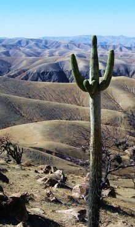

|

This program, titled "Peru, land of the Inca, Land of cacti", was taken in September of 2010. Starting in Chiclayo, and ending in Cuzco, we travelled by bus to many habitats, sometimes on roads no bus should ever attempt to drive! This program is a video presentation with all the sounds and motion to help the viewer feel as if they are there. With the optional fly over of the Nazca lines and the mandatory visit to Machu Picchu, this was an exciting trip to be on.
I have been in the cactus hobby close to 30 years and have been making pottery for some 17 years, and am a third-generation family farmer in the central valley, farming some acreage since 1915.
I will be bringing pottery to sell at the meeting.
|